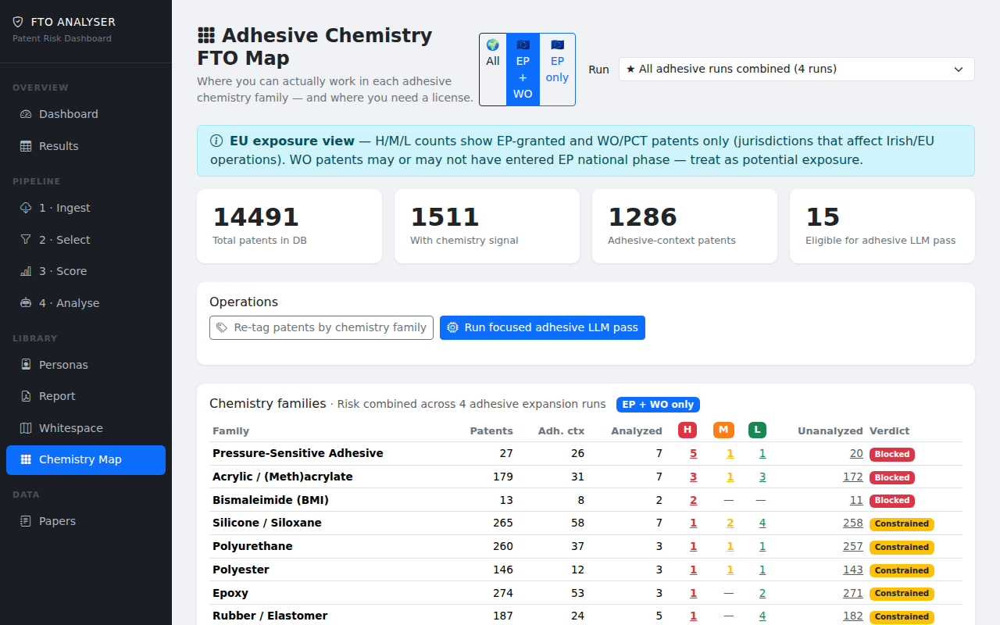
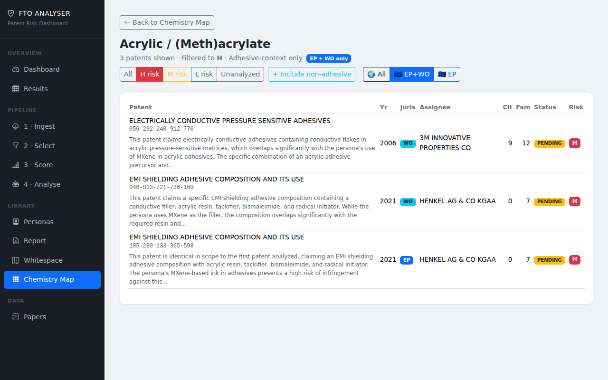
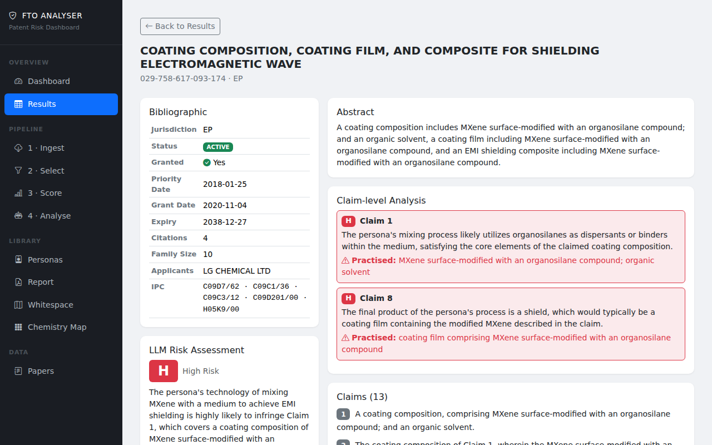
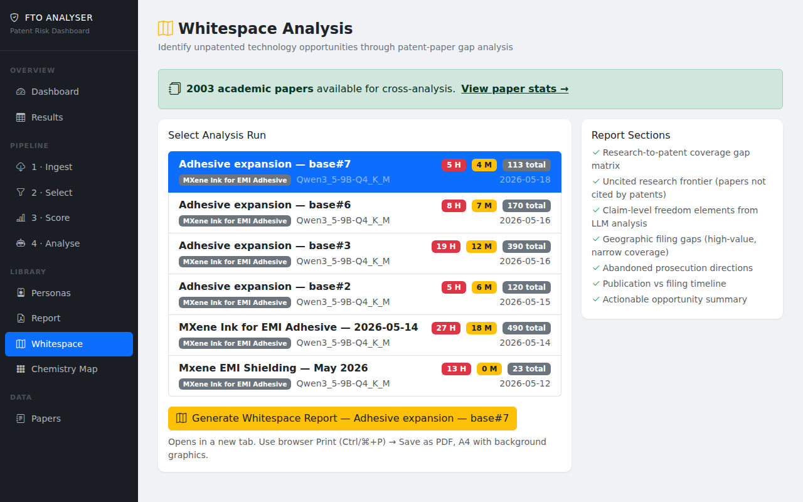

From research domain to structured IP landscape report —
fast, structured, and at a fraction of traditional cost.
May 2026
Across every technical discipline a TTO covers — chemistry, pharma, biotech, engineering, medical devices, software — the patent landscape is dense, fast-moving, and difficult to read without specialist support. Thousands of overlapping filings, ambiguous claim language, competing jurisdictions. Getting a clear picture of where a researcher can operate, or where new IP should be filed, normally means one of two things:
€300–600/h. Two to four weeks for a landscape report. Expensive, slow, and the output often can't be reused when the next question comes in.
PatSnap, Questel, Derwent — $15–40k/year. AI analysis is an add-on. Built for large corporate IP teams, not research institutions working across many domains on constrained budgets.
Most researchers, TTOs, and early-stage spinouts have neither the budget nor the time. Decisions get made without a proper landscape view — or the question doesn't get asked at all.
You give me a research domain or a specific hypothesis. I generate a structured patent intelligence report and hand over a curated corpus of relevant patents and papers.
Data sources
Patents — drawn directly from USPTO, EPO, and WIPO. 120M+ records, open APIs, no per-record charge.
Papers — pulled from OpenAlex, arXiv, IEEE Xplore, Semantic Scholar, and PubMed. 250M+ scholarly articles across all disciplines.
Scale
A domain corpus of 10–15k patents is built and fully LLM-analysed in hours — work that would take a consultant weeks to cover manually.
Every engagement delivers a written report covering:
Plus — live dashboard access
Report recipients also get access to an interactive web dashboard to drill into any finding: browse patents by risk tier, filter by jurisdiction, read the LLM reasoning behind each rating.
Format
Written report (PDF) + dashboard link. Designed to be handed directly to a patent attorney as a structured brief — saves 10–30 billable hours per engagement.
Deliverable
Structured report plus a curated, queryable corpus of relevant patents and papers — handed over so you can continue exploring independently.
Applied to a live domain: Ti₃C₂ MXene as a conductive filler for EMI shielding pressure-sensitive adhesives. Question posed: where is there freedom to operate in Europe, and what blocks us?
EP application layer identified as relatively open for MXene-adhesive formulations — whitespace confirmed for EP provisional patent filing before raising capital.
Primary EP blocker isolated: 3M conductive PSA (EP-granted, 2006, ACTIVE). Attorney review scoped to one patent rather than a 14,000-patent corpus.
Competitor signal: Henkel EP pending (2021) in adjacent EMI adhesive space — identified as both a risk and a potential licensing partner worth watching.
A researcher brings an invention disclosure. Rather than commissioning a full FTO immediately, I can generate a rapid landscape view — does a clear claim space exist, or is it already crowded?
Output: a structured go / no-go brief that tells you whether the disclosure is worth investing attorney time in.
Replaces the first €5–10k of consultant spend with a structured first-pass assessment.
Conversations between TTO staff and researchers about IP are often opinion-based on both sides. A structured landscape analysis changes that — here are the patents in your space, here is where you have room, here is what you need to design around.
Evidence-based conversations lead to better disclosure quality, better claim scoping, and fewer surprises at filing.
At portfolio level — what does the IP landscape look like across an entire department or faculty? Where are competitors filing aggressively? Where is the whitespace that should shape research priorities?
Informs research strategy, grant positioning, and spin-out decisions with a view of the landscape rather than individual disclosures in isolation.
The same tool, the same corpus — three different questions depending on where in the TTO workflow you need the answer.
Well-funded companies are validating AI-assisted patent work. None of them serve the research institution end of the market at accessible price points.
AI-assisted FTO, claim charts, invalidity, drafting. 40%+ of Am Law 100 firms. Primarily serves law firms and large corporate IP teams.
Enterprise pricing, US cloud.
Invention Evaluator — commercial viability assessments for TTOs. 7,000+ reports, 300+ universities. Answers "is this worth commercialising?" not "can we operate freely?"
Premium tier: >$12k per report.
FTO landscape analysis and whitespace mapping. Targeted at research institutions, TTOs, and spinouts. Faster, structured reports at accessible pricing.
Complementary to GenIP — different question, same customer.
GenIP asks: is this invention commercially viable? This service asks: where can you operate freely, and where should you file? A TTO needs both answers — currently from two separate providers.
| Specialist consultant | PatSnap / Questel | GenIP | This service | |
|---|---|---|---|---|
| Question answered | FTO / landscape | Search + analytics | Commercial viability | FTO + whitespace |
| Corpus handed over | No | No | No | Yes — patents + papers |
| Cost | €15–40k per engagement | $15–40k/yr subscription | >$12k premium report | Accessible per-report pricing |
| Patents covered | Selective sample | Large but manual | High level only | 10–15k, fully analysed |
| Output | Report | Dashboard | Report | Report + dashboard |
Landscape report
Full domain analysis: corpus build, LLM analysis of 10–15k patents, structured report covering risk landscape, whitespace map, key blockers, geographic exposure, and recommendations. Dashboard access included.
Report + curated patent and paper corpus handed over on completion.
Hypothesis check
Targeted analysis of a specific claim space or technology combination. Uses an existing corpus where available. Answers a specific question rather than mapping the full domain.
Report + relevant corpus subset handed over on completion.
Monitoring retainer
Quarterly landscape refresh across a defined portfolio of technology domains. New filings flagged, risk picture updated, academic citation signals tracked. Ongoing IP intelligence without ongoing attorney spend.
Quarterly delivery, standing arrangement.
The goal is not to replace patent attorneys — it is to make sure every decision that needs one arrives with structured intelligence, not a blank brief.
The MXene EMI landscape — 14,000 patents, 2,000 papers, full risk analysis — was built and delivered as a working prototype. The same process applies to any material science or chemistry domain.
github.com/industriousinfrastructure/patent-intelligence
Tool walkthrough
The following screens are taken from the live tool, applied to a corpus of 14,000+ MXene-related patents filtered to the EU exposure view.
Every technology family in the corpus is scored across H / M / L risk and given a verdict — Blocked, Constrained, or Open — based on the analysed patents. Jurisdiction filter applied here to EP + WO only.

Click any family cell to see the specific patents behind the rating. Each row shows the assignee, jurisdiction, status, and the LLM's plain-language explanation of why this patent poses a risk. Here: 3M and Henkel flagged in the acrylic family.

Every patent has a full LLM risk assessment: bibliographic data, abstract, claim-by-claim analysis, and a plain-language verdict with specific reasoning. The output is ready to hand to a patent attorney as a structured brief.

The whitespace view surfaces areas where patent filings are thin relative to the academic literature — gaps where new IP can be established. Anchored to the academic paper corpus so the signal reflects where science is moving, not just where filings have been.
